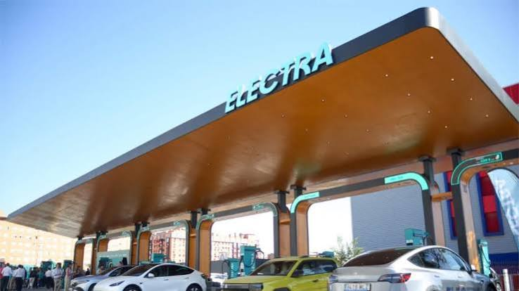
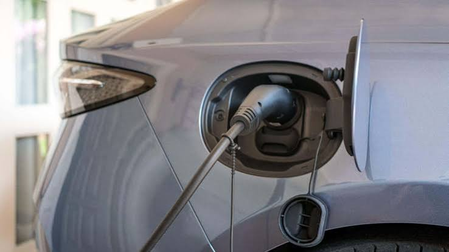
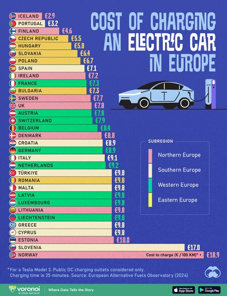
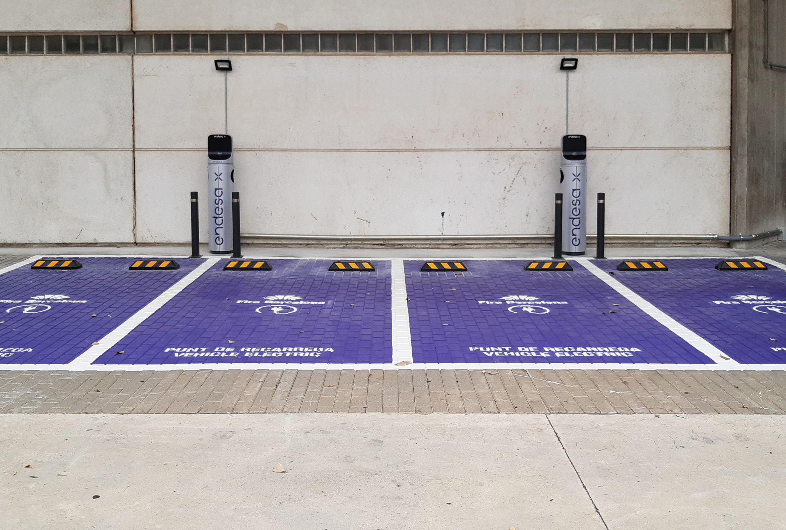
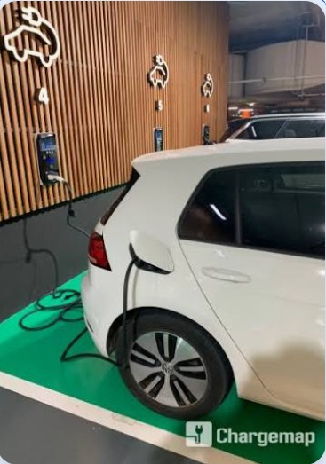
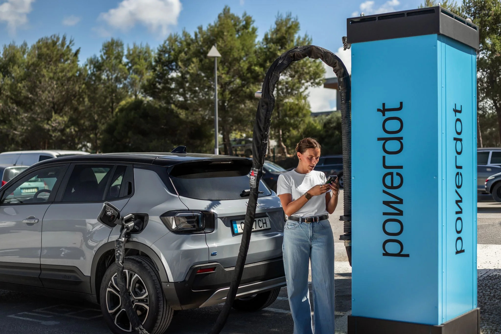
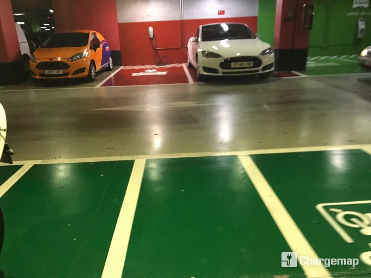
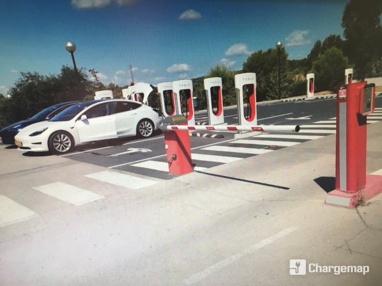
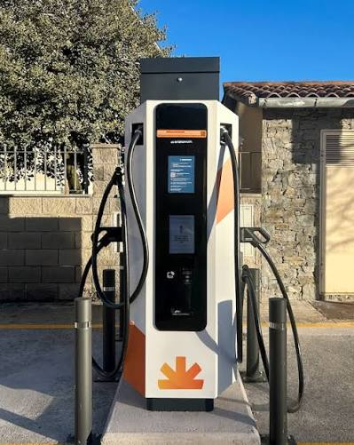

Nova estació ultraràpida a Barcelona
ElectraCat instal·la 8 punts de càrrega ultraràpida a la Gran Via de Barcelona.


ElectraCat instal·la 8 punts de càrrega ultraràpida a la Gran Via de Barcelona.

Nou conveni amb l’Ajuntament de Girona per ampliar la xarxa de la ciutat.

La xarxa ElectraCat ha superat el milió de recàrregues anuals.






| Empresa | Sector | Col·laboració |
|---|---|---|
| Endesa X | Energia | Subministrament elèctric |
| Wallbox | Fabricant | Punts de recàrrega |
| Ajuntament de Barcelona | Sector públic | Ubicacions urbanes |
| Tesla Supercharger | Fabricant | Compatibilitat de connectors |
| Iberdrola | Energia | Infraestructura verda |
| SEAT | Automoció | Vehicles elèctrics |